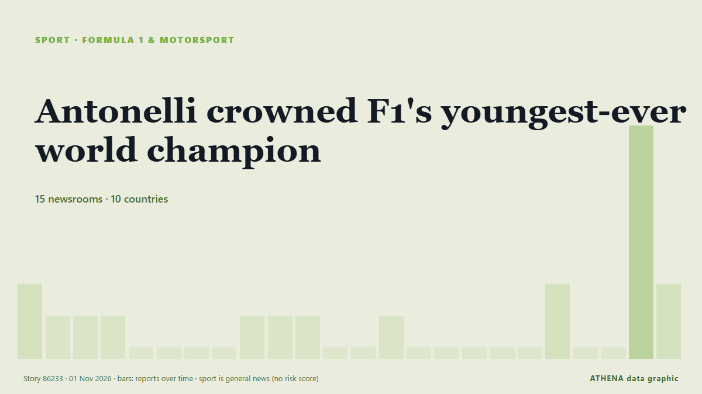

Antonelli crowned F1's youngest-ever world champion

Kimi Antonelli has become the youngest world champion in Formula 1 history, clinching his first title at 20 years old after finishing third at the Mexico City Grand Prix. из ESPN
Независимые источники: 17 изданий в 11 странах, с 31 окт.; первым сообщил CNA (Channel NewsAsia); освещение продолжает расти. Спорт и культура публикуются без оценки риска. Уверенность — 90 % (высокая); подтверждают независимые источники: 17 изданий, средняя надёжность источников — 71 %. СМИ по странам: Соединенные Штаты (7), Великобритания (7), ОАЭ (3). Освещение: с 31 окт. по 1 нояб., 23 ч.
Что изменилось: 29 новых сообщений от 18 редакций за 24 часа до 1 нояб..
Первый заголовок: Antonelli says title pressure made him more tense
Заголовки приводятся на английском языке, как они были опубликованы.
Коротко в цифрах
Отобрано, оценено и написано по опубликованной методологии ATHENA. Ни один редактор не вмешивается в отдельные события. Как это создаётся ›
| 31 Oct 23:37 UTC | 2 |
|---|---|
| 01 Nov 00:37 UTC | 1 |
| 01 Nov 01:37 UTC | 1 |
| 01 Nov 02:37 UTC | 1 |
| 01 Nov 03:37 UTC | 0 |
| 01 Nov 04:37 UTC | 0 |
| 01 Nov 05:37 UTC | 0 |
| 01 Nov 06:37 UTC | 0 |
| 01 Nov 07:37 UTC | 1 |
| 01 Nov 08:37 UTC | 1 |
| 01 Nov 09:37 UTC | 1 |
| 01 Nov 10:37 UTC | 0 |
| 01 Nov 11:37 UTC | 0 |
| 01 Nov 12:37 UTC | 1 |
| 01 Nov 13:37 UTC | 0 |
| 01 Nov 14:37 UTC | 0 |
| 01 Nov 15:37 UTC | 0 |
| 01 Nov 16:37 UTC | 0 |
| 01 Nov 17:37 UTC | 0 |
| 01 Nov 18:37 UTC | 2 |
| 01 Nov 19:37 UTC | 0 |
| 01 Nov 20:37 UTC | 0 |
| 01 Nov 21:37 UTC | 10 |
| 01 Nov 22:37 UTC | 8 |
Откуда эти цифры
Значимость
Риск
Уверенность
Освещение — кто сообщил и когда
заголовок в оригинале · открывает источник- CNA (Channel NewsAsia) · СингапурAntonelli says title pressure made him more tense
- Motorsport.com · Соединенные Штаты"I'll bombard myself with melatonin": Kimi Antonelli admits to driving "tense" and "tired" on cusp of F1 title
- Sky Sports · ВеликобританияAntonelli feeling 'tense' amid effort to seal F1 title
- Express Tribune · ПакистанAntonelli admits to feeling tense of eve of potential F1 title decider
- New Straits Times · МалайзияAntonelli admits to feeling tense of eve of potential F1 title decider
- The National · ОАЭWhat does Kimi Antonelli need to become F1 champion in Mexico? Driver rankings and prediction
- The Irish News (Belfast) · ВеликобританияKimi Antonelli’s road from rookie crash in Monza to F1 glory in Mexico
- Gulf News · ОАЭEverything record and milestone Antonelli could achieve with F1 title win in Mexico
- Indian Express · ИндияFull list of Formula One World Champions as Kimi Antonelli closes in on 2026 title
- ABC News Australia · АвстралияLive: High-speed wheel failure leads to huge crash that stops F1 race
- Sydney Morning Herald · АвстралияMexican F1 GP LIVE: Kimi Antonelli wins world championship; Ferrari feud explodes over radio
- Stuff · Новая ЗеландияLawson goes from pits to points in Mexico; Antonelli crowned youngest champion
- Motorsport.com · Соединенные ШтатыKimi Antonelli becomes youngest world champion in F1 history
- Sky Sports · ВеликобританияHistory made! Antonelli crowned youngest F1 world champion
- Gulf News · ОАЭAntonelli on brink of history at Mexico City GP, needing only ninth-place finish to seal F1 title
- The Irish News (Belfast) · ВеликобританияKimi Antonelli crowned F1 world champion after third-place finish in Mexico
- Motorsport.com · Соединенные ШтатыFive quick takeaways from historic Mexico GP
- CNA (Channel NewsAsia) · СингапурKimi Antonelli becomes youngest F1 champion at 20 years old
- The Irish News (Belfast) · ВеликобританияKimi Antonelli wins F1 world title: The six races that proved pivotal
- ESPN · Соединенные ШтатыAntonelli crowned F1's youngest-ever world champion
- MyJoyOnline · ГанаAntonelli becomes youngest F1 champion at 20 years old
- Belfast Telegraph · ВеликобританияKimi Antonelli becomes youngest-ever Formula One champion
- Evening Standard (London) · ВеликобританияKimi Antonelli wins historic first F1 title as Lewis Hamilton fumes over first-lap scuffle at Mexico City GP
- Motorsport.com · Соединенные ШтатыF1's youngest world champions
- Anadolu Agency (English) · ТурцияKimi Antonelli becomes youngest F1 world champion with 3rd-place finish in Mexico
- Motorsport.com · Соединенные ШтатыEmotional Kimi Antonelli left "speechless" by maiden F1 world title in Mexico
- New Straits Times · МалайзияAntonelli makes F1 history as youngest-ever world champion at 20
- Bangkok Post — page reader · ТаиландAntonelli becomes youngest Formula One world champion
- Motorsport.com · Соединенные ШтатыMax Verstappen shares emotional message after Kimi Antonelli's historic F1 title win